写在前面
自学爬虫入门之后感觉应该将自己的学习过程整理一下，也为了留个纪念吧。
scrapy环境的配置还请自行百度，其实也不难（仅针对windows系统，centos配置了两天，直到现在都没整明白）
就是安装python之后下载pip，setup pip，然后用pip install下载就行了（pyspider也是这样配置的）。
附主要资料参考地址
scrapy教程地址 https://www.bilibili.com/video/av13663892?t=129&p=2
eclipse开发scrapy https://blog.csdn.net/ioiol/article/details/46745993
首先要确保主机配置了eclipse、python还有pip的环境
安装scrapy框架的方法
进入cmd界面
::pip更新命令
pip install --upgrade pip
::pip安装scrapy
pip intall scrapy
安装完成之后就可以使用了
cmd环境创建scrapy的demo程序
首先创建一个目录，位置随意，随后进入目录，输入scrapy查看命令使用方式
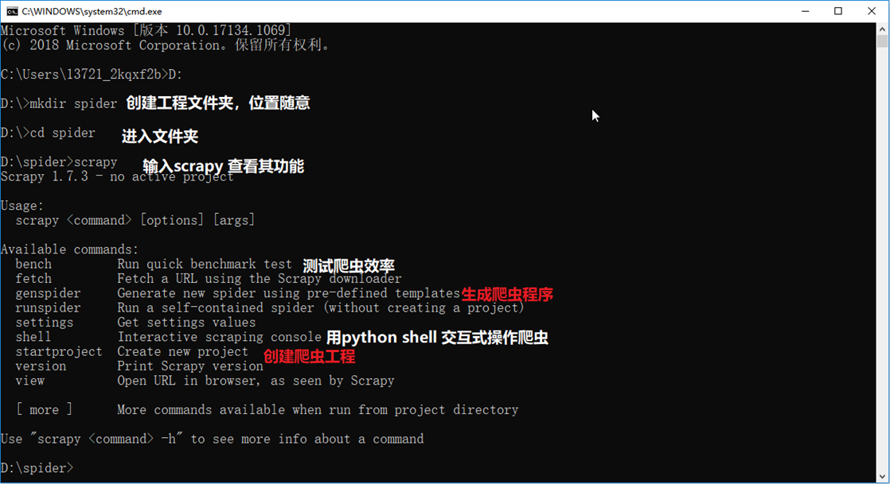
startproject创建工程命令。格式scrapy startproject 工程名称
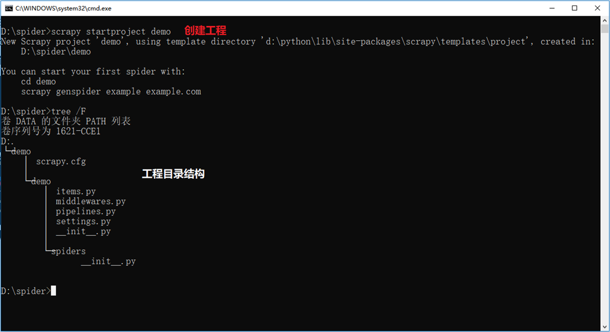
genspider创建爬虫命令，一个工程可以有多个爬虫。格式 scrapy genspider 爬虫名（不能和工程重名）爬虫初始ip地址值
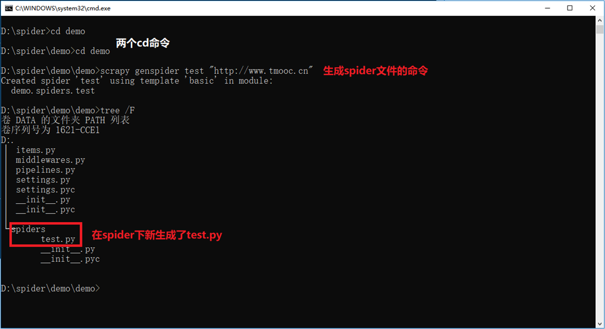
目标是获取tmooc首页的侧边栏的内容（sub的子元素a的子元素span的文本内容)
tmooc首页
侧边栏内容
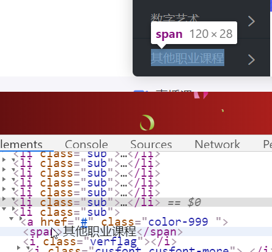
编辑item.py，位置在spider目录同级（代码简单，就不粘贴代码了）
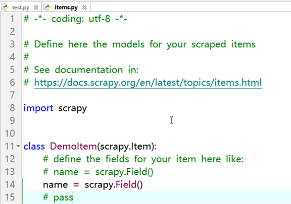
编辑test.py
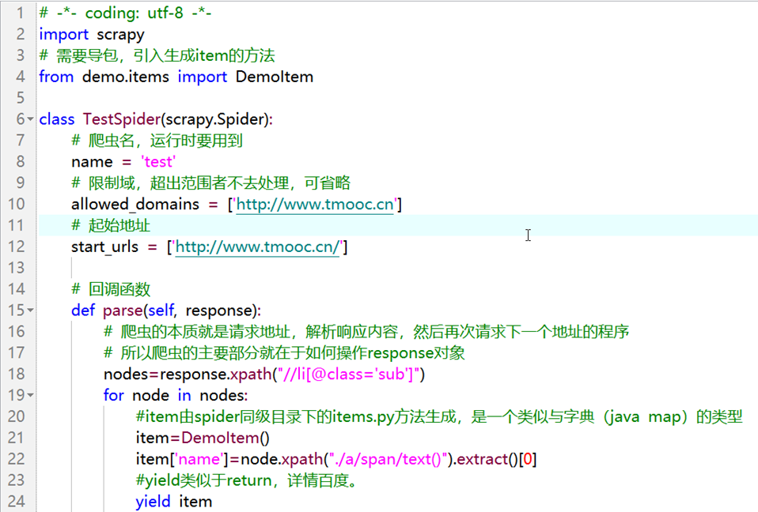
代码部分
# -*- coding: utf-8 -*-
import scrapy
# 需要导包，引入生成item的方法
from demo.items import DemoItem
class TestSpider(scrapy.Spider):
# 爬虫名，运行时要用到
name = 'test'
# 限制域，超出范围者不去处理，可省略
allowed_domains = ['http://www.tmooc.cn']
# 起始地址
start_urls = ['http://www.tmooc.cn/']
# 回调函数
def parse(self, response):
# 爬虫的本质就是请求地址，解析响应内容，然后再次请求下一个地址的程序
# 所以爬虫的主要部分就在于如何操作response对象
nodes=response.xpath("//li[@class='sub']")
for node in nodes:
#item由spider同级目录下的items.py方法生成，是一个类似与字典（java map）的类型
item=DemoItem()
item['name']=node.xpath("./a/span/text()").extract()[0]
#yield类似于return，详情百度。
yield item
编译test.py，运行spider程序
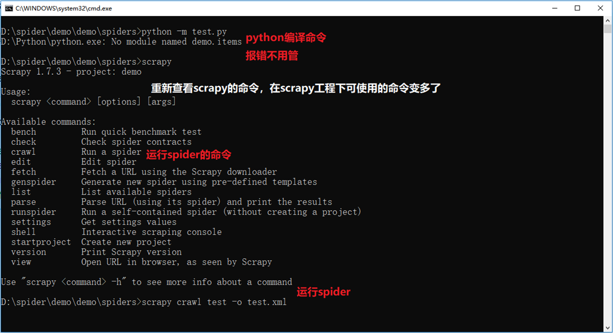
crawl是运行spider的命令。格式scrapy crawl 爬虫名 [-o 文件名]
-o参数可选，作用是将spider爬取的数据保存。保存在运行指令的目录下，可以保存成csv（excel表）json jsonl xml...等多种格式
结果展示
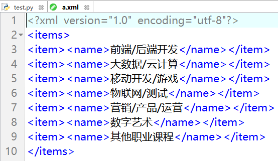
eclipse开发scrapyspider工程
首先要保证eclipse有python的开发环境
新建python工程，选项默认即可
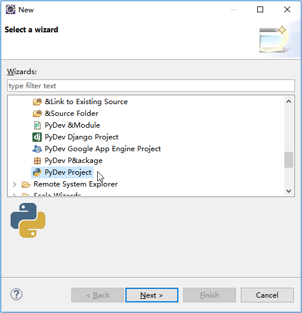
创建好的目录结构
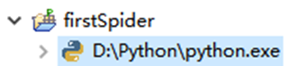
进入本地的workspace，找到该工程目录
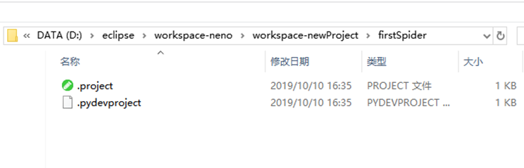
将刚才创建的scrapy工程目录拷贝过来，不要一开始创建的那个文件夹
将demo目录
拷贝到
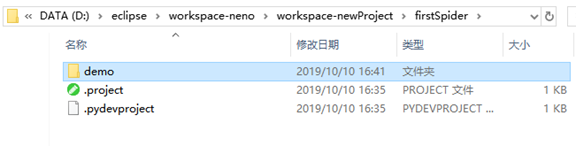
工程目录下。记得删除上次运行的结果文件
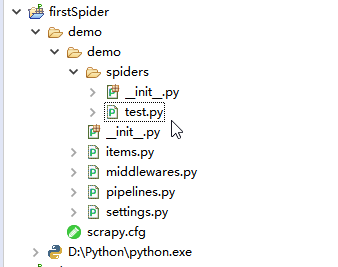
run -> run configuretion ->
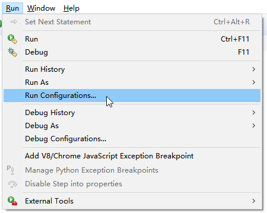
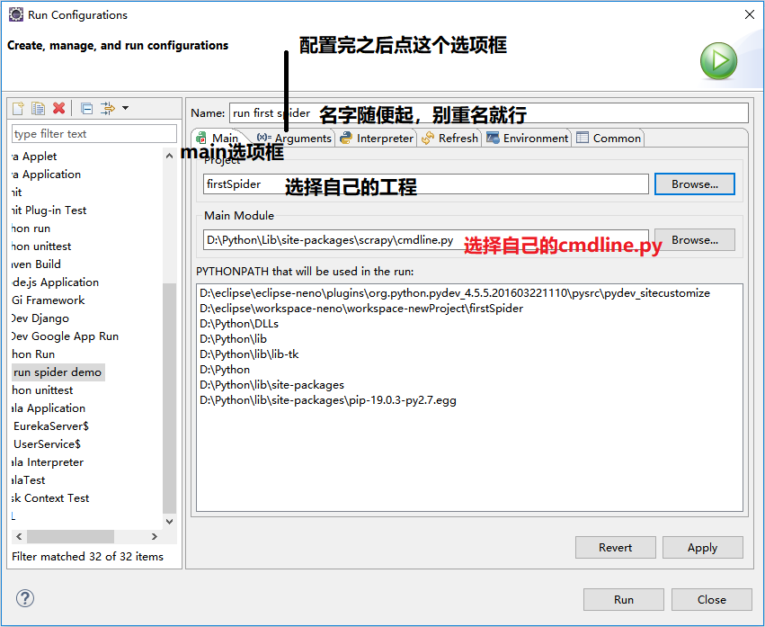
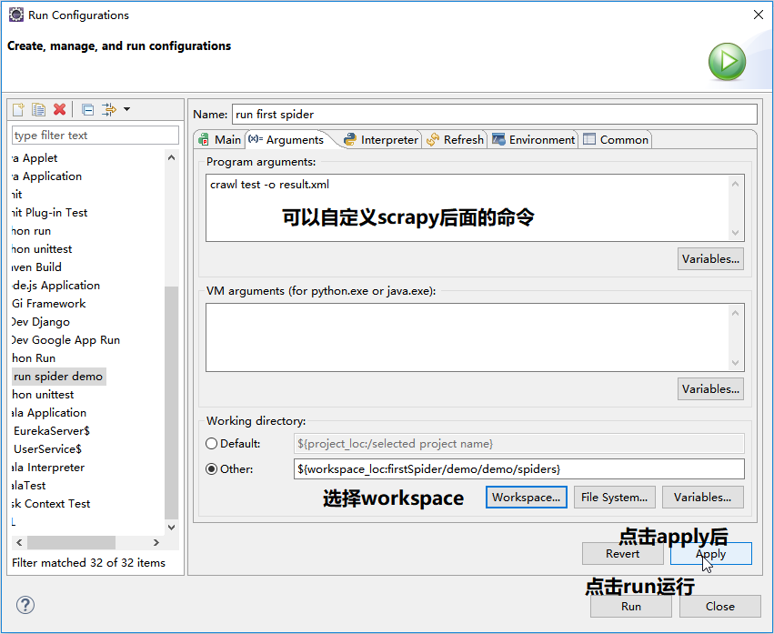
运行结果
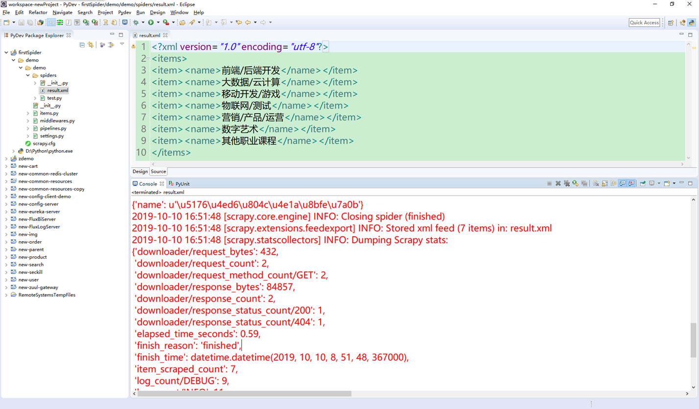